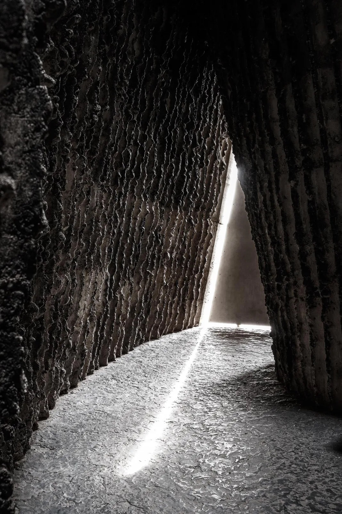
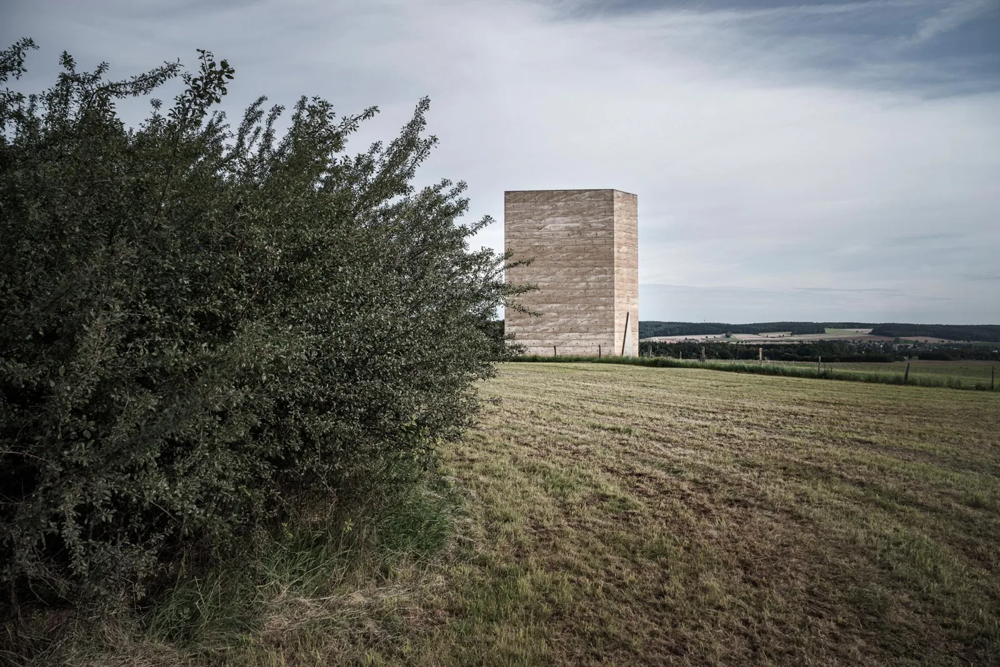
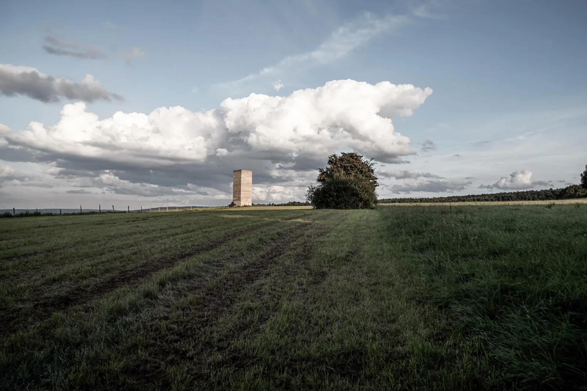
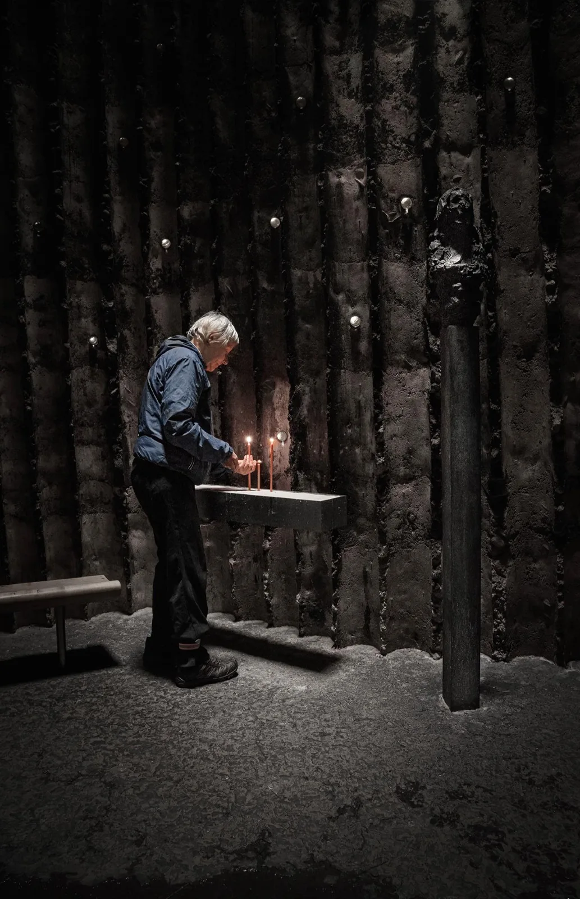
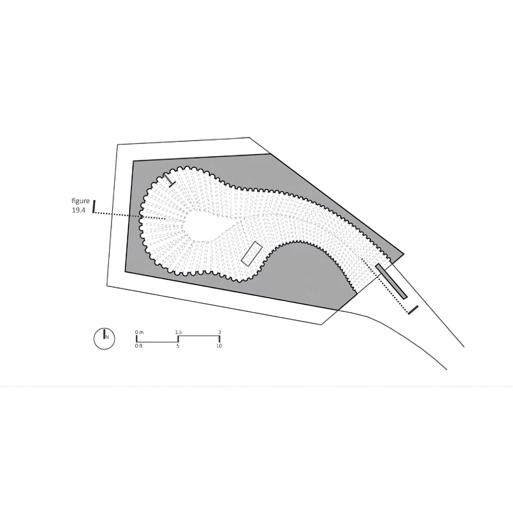
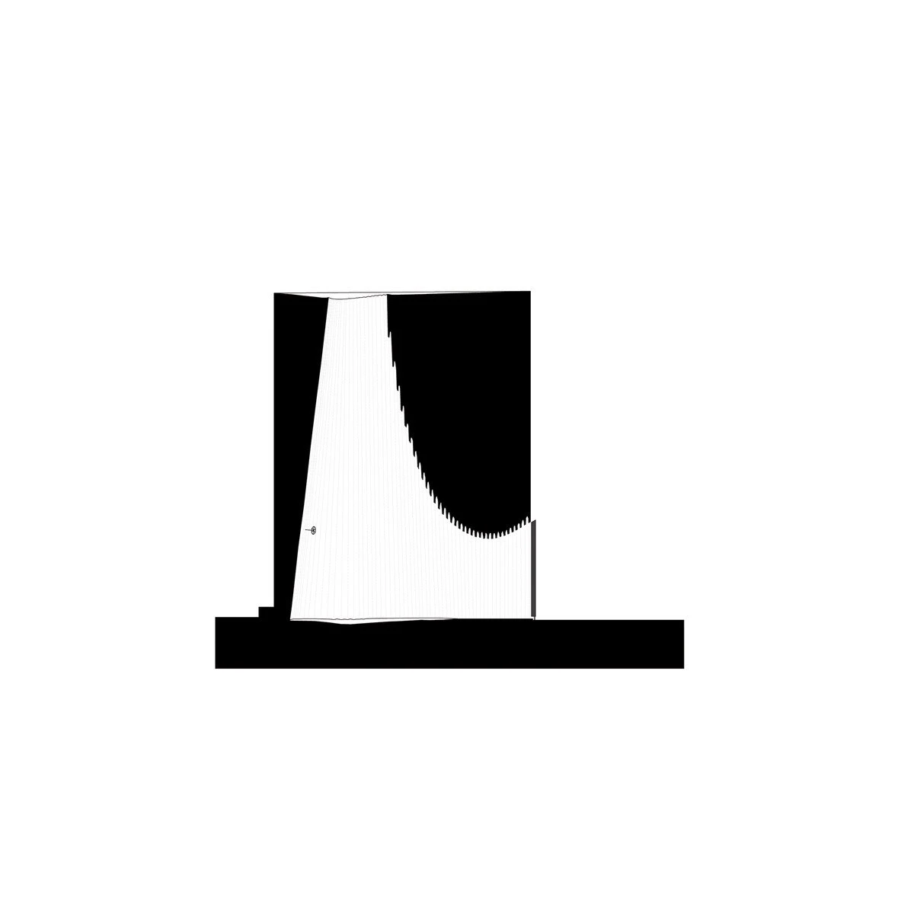

Chapel · 2007
Bruder Klaus Field Chapel
Peter Zumthor
Wachendorf, Germany
A small field chapel in the landscape near Wachendorf, intended for silence, meditation and prayer.
Rammed concrete was built up in layers around tent-shaped wooden formwork. Once it had hardened, a slow fire charred and shrank the tree trunks so they could be removed. Their impressions and the soot-blackened surfaces give the chamber its rough, cave-like character, intensified by light from the opening above.


Relevant connections
THINK
The chapel provides a place for silence, prayer and inward attention.
Images and drawings / 06









